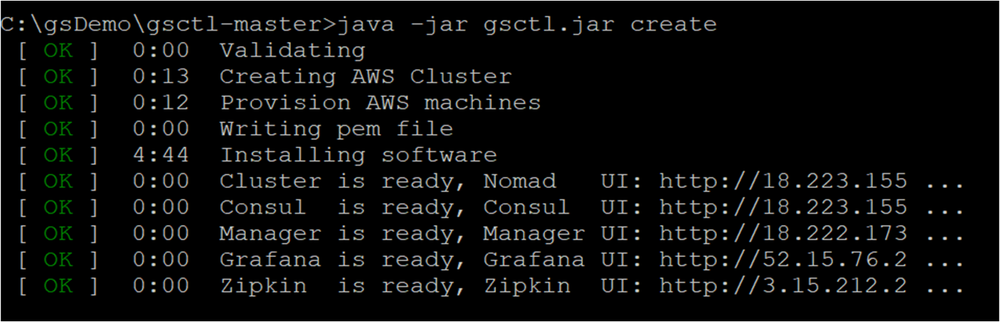
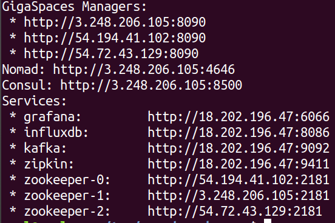
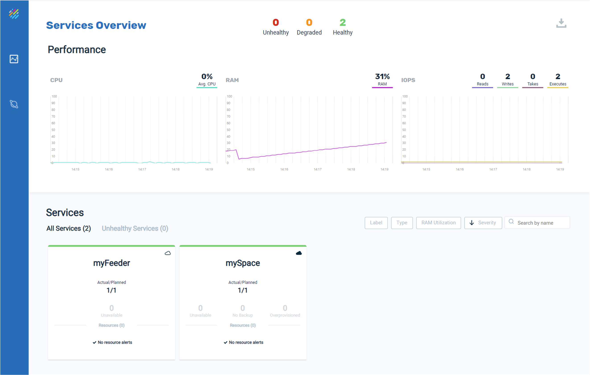
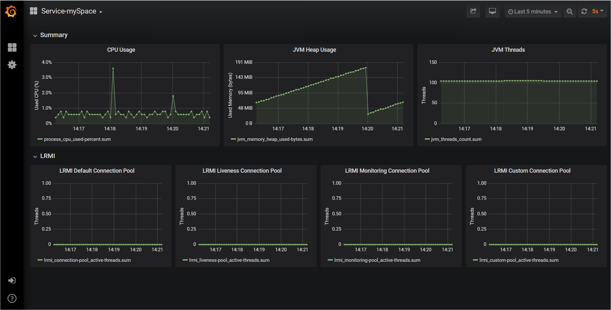
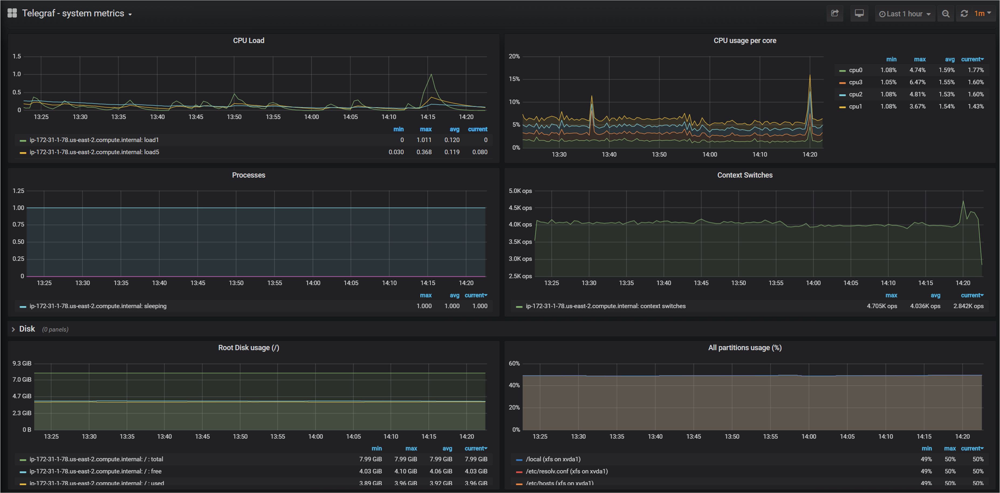

Creating a Cluster in the Cloud
gsctl is a simple CLI tool for creating clusters. You can create a cluster in minutes with a single command – run java -jar gsctl.jar create.
In this topic, you will learn how to create, provision and install a cluster on Amazon Web Services (AWS) and then remove it by doing the following:
- Create a cluster.
- Deploy services in the cluster.
- Undeploy the services and tear down the cluster.
Prerequisites
Before beginning to work with the gsctl tool, ensure that you have the following:
Downloading the Utility
The gsctl tool is available from the Github repo.
Creating a Cluster
Follow the steps in the procedure to create a cluster and deploy the services.
To create a cluster:
-
Verify that an .aws folder exists in the home directory on your local machine, and that it contains the config and credentials files. The credentials file should include your aws_access_key_id and aws_secret_access_key, and the config files should include your region and output definitions.

-
Create an empty directory on your machine. In this example, the directory name is gsDemo.
- Download the most current version of the gsctl.jar file from Github to the directory you created (gsDemo) and extract the contents.
-
Open a command window and type the following:
java -jar gsctl.jar init --cluster-name=gs_demo_cluster
This command creates a provision.yml file. You can modify this file to supply your AWS resources, such as VPC, keyName, and securityGroups values.
If you don't update the provision.yml file manually, it will use the resources in the .aws folder.
aws:
keyName: null
vpcId: null
vpcSubnetId: null
securityGroup: null
amiId: null
userName: null
servers:
label: "GS Cluster [GS_CLUSTER] Server Group"
groups:
- type: "m4.xlarge"
tags: null
count: 3
clients:
label: "GS Cluster [GS_CLUSTER] Client Group"
groups:
- type: "m4.xlarge"
tags: null
count: 3
gsManagers: 3
name: "GS_CLUSTER"
-
To create a cluster, run the following command:
java -jar gsctl.jar create
The cloud platform begins to create the cluster:

You can monitor the progress of the cluster in your cloud platform dashboard, for example the VPC Dashboard in AWS:

The process of creating the cluster takes only a few minutes until the nodes are up and running. You can see when the Master (server) nodes and Worker (client) nodes are running and have passed the status checks.

Deploying the Services
After your cluster is up and running, you can deploy the services. The gsctl tool comes with sample feeder and processor services in the Services folder.
To deploy the sample services:
-
First, deploy the stateful service (the Space example). Type the following command to deploy a processor service called mySpace:
java -jar gsctl.jar deploy stateful mySpace processor.jar
-
Next, deploy the stateless service (the feeder example). Type the following command to deploy a feeder service called myFeeder:
java -jar gsctl.jar deploy stateless myFeeder feeder.jar
A feeder service called myFeeder is deployed.
-
Now you can monitor your services using the available administration and monitoring tools. To access the tools, do the following:
-
Run the following command:
java -jar gsctl.jar list-services
This returns all the manager services with their URLs.

-
Copy any of the manager URLs into your browser to open Ops Manager and view the deployed services.

-
Copy the grafana URL to your browser to open Grafana and navigate to the pre-defined dashboards:

-
Select the Telegraf system metrics dashboard in Grafana to view the cluster metrics.

Removing a Cluster
You can delete your cluster when you no longer need it, in order to release the cloud resources. First, undeploy the stateful service, and then tear down the cluster.
To remove the cluster:
-
In the directory where you deployed the services, type the following command:
java -jar gsctl.jar undeploy mySpace
The Space is undeployed from the cluster.
-
In the directory where you created the cluster, run the following command:
java -jar gsctl.jar destroy
This tears down the cluster and deletes any dynamically created resources.